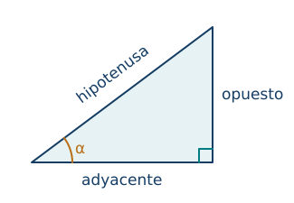
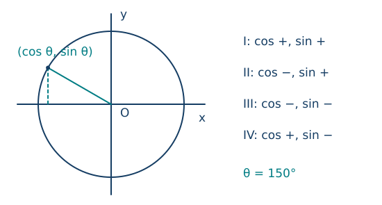
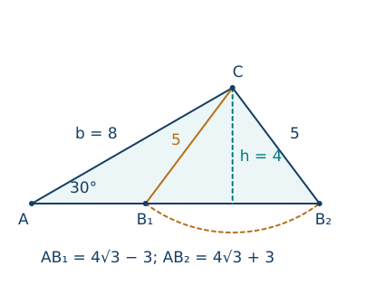
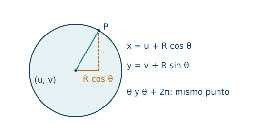

Razones trigonométricas, radianes e identidades
← Circunferencia, círculo y geometría del espacio · Índice del libro · Siguiente →
Para conocer la altura de una torre podemos medir una distancia en el suelo y el ángulo con que vemos su extremo. La semejanza permite anticipar algo decisivo: si conservamos ese ángulo y duplicamos la distancia horizontal, también se duplica la altura sobre nuestros ojos. Hay una proporción que depende de la inclinación. La trigonometría comienza al darle un nombre y aprender a recuperarla a partir de un ángulo.
El paso siguiente ampliará la pregunta. Un radio puede girar más allá de un ángulo recto, dar una vuelta o avanzar en sentido contrario. Sus coordenadas describirán entonces las mismas relaciones mediante signos y periodicidad. Esa ampliación permitirá resolver ecuaciones y representar posiciones sobre una circunferencia.
Una inclinación, muchas longitudes
Consideremos un triángulo rectángulo y fijemos uno de sus ángulos agudos, \(\alpha\). La hipotenusa está enfrente del ángulo recto. Entre los otros dos lados, el cateto opuesto queda enfrente de \(\alpha\) y el cateto adyacente forma parte de él. Si elegimos el otro ángulo agudo, estos dos catetos intercambian su papel. La hipotenusa conserva el suyo.

Dos triángulos rectángulos con un mismo ángulo agudo son semejantes por el criterio AA. Sus lados correspondientes se multiplican por un mismo factor positivo y, al formar cocientes, ese factor se cancela. Por eso podemos definir el seno, el coseno y la tangente de \(\alpha\) sin elegir un tamaño de triángulo:
\[\begin{aligned} \sin\alpha&=\frac{\text{opuesto}}{\text{hipotenusa}},\\ \cos\alpha&=\frac{\text{adyacente}}{\text{hipotenusa}},\\ \tan\alpha&=\frac{\text{opuesto}}{\text{adyacente}}. \end{aligned}\]
Las tres razones son positivas para ángulos agudos. Seno y coseno son menores que uno, pues cada cateto es menor que la hipotenusa. La tangente puede superar uno: una pendiente pronunciada tiene mayor subida que avance horizontal. Estos cocientes son adimensionales si los lados se expresan en una misma unidad. Una pendiente del \(25\%\) significa una subida de 25 por cada 100 unidades horizontales; su tangente es \(0{,}25\) y su ángulo no es \(25^\circ\).
Al dividir el seno por el coseno se obtiene la tangente, ya que se cancela la hipotenusa. Los dos ángulos agudos suman \(90^\circ\); al intercambiar los catetos vemos también que el seno de uno es el coseno de su complementario.
Hay valores que podemos construir exactamente. En un triángulo rectángulo isósceles de catetos 1, Pitágoras da hipotenusa \(\sqrt2\): seno y coseno de \(45^\circ\) valen \(1/\sqrt2=\sqrt2/2\). Al dividir un triángulo equilátero de lado 2 por una altura aparecen una hipotenusa 2, un cateto 1 y otro \(\sqrt3\). Los ángulos son \(30^\circ\) y \(60^\circ\), lo que determina sus tres razones. Para otros valores usamos una calculadora en el modo angular correspondiente, conservando suficientes cifras hasta el final.
Propiedades de las razones en un triángulo rectángulo
| Propiedad | Fórmula y condiciones de uso |
|---|---|
| Seno y coseno | \(\sin\alpha=o/h\), \(\cos\alpha=a/h\), con \(0<\alpha<\pi/2\). |
| Tangente | \(\tan\alpha=o/a=\sin\alpha/\cos\alpha\); en un triángulo no degenerado \(a>0\). |
| Invariancia | Las razones no cambian bajo semejanza del triángulo. |
| Complementarios | \(\sin(\pi/2-\alpha)=\cos\alpha\) y \(\cos(\pi/2-\alpha)=\sin\alpha\). |
| Ángulos especiales | Para \(30^\circ,45^\circ,60^\circ\), los senos son \(1/2,\sqrt2/2,\sqrt3/2\) y los cosenos se leen en orden inverso; la tangente es su cociente. |
Pruebas. Véase «Razones trigonométricas y semejanza» en el apéndice.
Podemos invertir la pregunta sobre los lados y buscar el ángulo a partir de una razón. En un triángulo rectángulo sabemos que el ángulo buscado es agudo; esa información selecciona una única inclinación para cada valor positivo de la tangente, que crece desde cero sin cota superior en ese intervalo. Escribimos \(\alpha=\arctan t\) para recuperar la inclinación de tangente \(t\). De modo análogo, \(\arcsin s\) y \(\arccos c\) recuperan un ángulo agudo cuando \(0<s,c<1\). La elección del intervalo será indispensable cuando ampliemos los giros y una misma razón reaparezca en varias posiciones. En algunas calculadoras, la tecla \(\sin^{-1}\) realiza esa inversión; el recíproco se calcula mediante \(1/\sin\).
Problema 1. La inclinación del techo
Enunciado. Un techo sube \(3\,\mathrm m\) en un avance horizontal de \(4\,\mathrm m\). Halla las tres razones de su ángulo de inclinación y la longitud inclinada.
Solución. El avance y la subida son catetos perpendiculares. La longitud inclinada es \(h=\sqrt{4^2+3^2}=5\,\mathrm m\). Para el ángulo con la horizontal, el opuesto es 3 y el adyacente 4: \(\sin\alpha=3/5\), \(\cos\alpha=4/5\) y \(\tan\alpha=3/4\). Si se ampliara el techo manteniendo la inclinación, las tres longitudes cambiarían por el mismo factor y las razones seguirían siendo estas. La subida representa una pendiente del \(75\%\).
Problema 2. Medir una torre desde los ojos
Enunciado. A \(10\,\mathrm m\) de la base de una torre, sobre suelo horizontal, se observa su extremo con elevación de \(30^\circ\). Los ojos están a \(1{,}6\,\mathrm m\) del suelo. Halla la altura.
Solución. Trazamos la horizontal desde los ojos hasta la torre. El triángulo rectángulo tiene avance 10 y subida \(H-1{,}6\). Así, \(\tan30^\circ=(H-1{,}6)/10=1/\sqrt3\). Al despejar, \(H=1{,}6+10/\sqrt3\,\mathrm m\), aproximadamente \(7{,}37\,\mathrm m\). La altura de los ojos se añade porque el ángulo se midió desde ese nivel. La horizontalidad del terreno y la verticalidad de la torre forman parte del modelo.
Problema 3. Una escalera inclinada
Enunciado. Una escalera de \(10\,\mathrm m\) forma \(60^\circ\) con el suelo horizontal. ¿A qué altura llega y a qué distancia queda su pie de la pared vertical?
Solución. La escalera es la hipotenusa. La altura es el cateto opuesto: \(y=10\sin60^\circ=5\sqrt3\,\mathrm m\). La separación es el adyacente: \(x=10\cos60^\circ=5\,\mathrm m\). Como control, \(x^2+y^2=25+75=100\), el cuadrado de la longitud de la escalera. Las respuestas describen longitudes positivas y el punto de apoyo queda por debajo de los \(10\,\mathrm m\).
Problema 4. De la razón al ángulo
Enunciado. Un triángulo rectángulo tiene catetos 3 y \(4\,\mathrm{cm}\). Halla el ángulo opuesto al cateto de 3 y explica la elección de la función inversa.
Solución. Para ese ángulo conocemos directamente opuesto y adyacente, así que \(\tan\alpha=3/4\). Buscamos la única solución aguda: \(\alpha=\arctan(3/4)\approx36{,}87^\circ\), usando el modo grados. También sería \(\arcsin(3/5)\) después de obtener la hipotenusa. El otro ángulo agudo es \(90^\circ-\alpha\approx53{,}13^\circ\). La suma comprueba que se ha identificado el ángulo pedido.
Un ángulo puede seguir girando
En el capítulo anterior el radián apareció como cociente entre arco y radio: \(\theta=s/r\). Una vuelta equivale a \(2\pi\) radianes y a \(360^\circ\). Para expresar giros orientados fijamos un sentido positivo, el contrario al de las agujas del reloj; el sentido opuesto recibe signo negativo. Un ángulo de \(-\pi/3\) describe un giro de \(60^\circ\) en sentido horario. La longitud recorrida es positiva y se calcula con el valor absoluto del giro cuando se sigue ese arco sin invertir el movimiento.
Situemos una circunferencia de radio 1 en un sistema de ejes perpendiculares. Partimos del punto \((1,0)\) y giramos un radio un ángulo \(\theta\). Si su extremo es \((x,y)\), definimos
\[\cos\theta=x,\qquad \sin\theta=y.\]
En el primer cuadrante la perpendicular al eje horizontal forma un triángulo de hipotenusa 1; las definiciones coinciden con las razones anteriores. En los demás cuadrantes las coordenadas aportan los signos. Sobre los ejes obtenemos directamente, sin triángulos degenerados, \(\sin0=0\), \(\cos0=1\), \(\sin(\pi/2)=1\) y \(\cos(\pi/2)=0\).

Una vuelta completa deja el extremo en el mismo lugar: seno y coseno tienen período \(2\pi\). La tangente se define como \(\sin\theta/\cos\theta\) donde el denominador sea distinto de cero. Queda sin definir en \(\theta=\pi/2+k\pi\), con \(k\) entero. Tras media vuelta las dos coordenadas cambian de signo y su cociente se conserva, por lo que la tangente tiene período \(\pi\).
Las simetrías permiten reconstruir valores sin nuevas tablas. Reflejar respecto del eje horizontal cambia \(\theta\) por \(-\theta\) y cambia solo el seno de signo. Reflejar respecto del eje vertical lleva \(\theta\) a \(\pi-\theta\): conserva el seno y cambia el coseno de signo. Para un radio situado dentro de un cuadrante, el ángulo de referencia es el ángulo agudo que forma con el eje horizontal; determina las magnitudes de las coordenadas y el cuadrante determina sus signos.
Propiedades de radianes, signos y periodicidad
| Propiedad | Fórmula y condiciones de uso |
|---|---|
| Conversión | \(\theta=\alpha\pi/180\) para valor numérico \(\alpha\) en grados. |
| Recorrido de arco | \(\ell=r\lvert\theta\rvert\) para giro sin cambio de sentido; \(\theta\) en radianes. |
| Círculo unitario | \((\cos\theta,\sin\theta)\) es el extremo del radio, para todo \(\theta\in\mathbb R\). |
| Vuelta y media vuelta | Seno y coseno se repiten al sumar \(2k\pi\); al sumar \(\pi\) ambos cambian de signo. |
| Reflexiones | \(\sin(-\theta)=-\sin\theta\), \(\cos(-\theta)=\cos\theta\); \(\sin(\pi-\theta)=\sin\theta\), \(\cos(\pi-\theta)=-\cos\theta\). |
| Dominio y período de tangente | \(\theta\ne\pi/2+k\pi\); \(\tan(\theta+k\pi)=\tan\theta\), con \(k\in\mathbb Z\). |
Pruebas. Véase «Giros, coordenadas y periodicidad» en el apéndice.
Problema 5. Un giro de doscientos veinticinco grados
Enunciado. Convierte \(225^\circ\) a radianes y calcula el arco recorrido en una circunferencia de radio \(8\,\mathrm{cm}\).
Solución. La conversión da \(225\pi/180=5\pi/4\). Como el giro es positivo y menor que una vuelta, el arco recorrido mide \(\ell=8(5\pi/4)=10\pi\,\mathrm{cm}\). El resultado supera media circunferencia, que mide \(8\pi\), y es menor que la vuelta completa, de \(16\pi\). Multiplicar el radio por 225 sin convertir los grados produciría una longitud incorrecta.
Problema 6. Un giro horario
Enunciado. Para \(\theta=-\pi/3\), encuentra un representante en \([0,2\pi)\) y las coordenadas del punto unitario.
Solución. Sumamos una vuelta: \(-\pi/3+2\pi=5\pi/3\). Ambos giros terminan en el cuarto cuadrante. La reflexión del punto de \(\pi/3\) respecto del eje horizontal da \((\cos\theta,\sin\theta)=(1/2,-\sqrt3/2)\). El coseno es positivo porque el punto está a la derecha del origen; el seno es negativo porque está debajo. Los giros difieren en su recorrido, aunque comparten extremo.
Problema 7. Recuperar el signo que falta
Enunciado. Se sabe que \(\sin\theta=5/13\) y que el punto unitario está en el segundo cuadrante. Halla coseno y tangente.
Solución. El círculo unitario satisface \(x^2+y^2=1\), de modo que \(x^2=1-25/169=144/169\). Las raíces posibles son \(x=\pm12/13\). En el segundo cuadrante \(x<0\), así que \(\cos\theta=-12/13\). Por el cociente, \(\tan\theta=(5/13)/(-12/13)=-5/12\). El dato del cuadrante resuelve la alternativa que queda al extraer la raíz.
Problema 8. Dos ángulos con el mismo seno
Enunciado. Calcula seno, coseno y tangente de \(150^\circ\). Explica por qué recuperar el ángulo solo desde el seno exige información adicional.
Solución. El ángulo es \(180^\circ-30^\circ\), así que su seno vale \(1/2\) y su coseno \(-\sqrt3/2\). La tangente es \(-1/\sqrt3=-\sqrt3/3\). También \(30^\circ\) tiene seno \(1/2\), pero su coseno es positivo. Por ello la operación inversa debe elegir un intervalo: la calculadora devuelve \(\arcsin(1/2)=30^\circ\) como valor principal, mientras el segundo cuadrante exige \(150^\circ\).
Identidades nacidas del círculo
Las coordenadas de un punto unitario cumplen \(x^2+y^2=1\). Sustituir sus nombres trigonométricos da la identidad fundamental
\[\sin^2\theta+\cos^2\theta=1.\]
La notación \(\sin^2\theta\) significa \((\sin\theta)^2\). La igualdad vale para todo ángulo real. Si dividimos por \(\cos^2\theta\), debemos excluir sus ceros y obtenemos \(1+\tan^2\theta=1/\cos^2\theta\). La nueva igualdad tiene un dominio más pequeño porque se ha realizado una división.
Para componer dos giros, observemos qué ocurre con las direcciones horizontal y vertical. Un giro de \(\alpha\) lleva la primera a \((\cos\alpha,\sin\alpha)\) y la segunda a \((-\sin\alpha,\cos\alpha)\): permanecen perpendiculares. Un punto \((x,y)\) puede construirse como la suma de sus desplazamientos horizontal y vertical. Al girarlos y recomponerlos, sus nuevas coordenadas son
\[(x\cos\alpha-y\sin\alpha,\quad x\sin\alpha+y\cos\alpha).\]
El apéndice justifica esa recomposición mediante paralelogramos y proyecciones. Para \(x=\cos\beta\), \(y=\sin\beta\), el punto final corresponde al giro \(\alpha+\beta\). Comparar las dos coordenadas prueba las fórmulas de adición. Reemplazar \(\beta\) por \(-\beta\) da las de diferencia; hacer \(\beta=\alpha\) da las de ángulo doble. Esta cadena explica por qué aparecen productos cruzados y por qué el seno de una suma no es, en general, la suma de los senos.
Una identidad afirma igualdad en todo su dominio común; una ecuación pregunta para qué valores se cumple una igualdad. Para comprobar una identidad, podemos transformar un miembro hasta llegar al otro, anotando los puntos donde dividimos. Verificar varios ángulos puede descubrir un error, pero la afirmación para todos los ángulos necesita un argumento general.
Propiedades de las identidades trigonométricas
| Propiedad | Fórmula y condiciones de uso |
|---|---|
| Pitagórica | \(\sin^2\theta+\cos^2\theta=1\), para todo real \(\theta\). |
| Con tangente | \(1+\tan^2\theta=1/\cos^2\theta\), si \(\cos\theta\ne0\). |
| Seno de suma | \(\sin(\alpha+\beta)=\sin\alpha\cos\beta+\cos\alpha\sin\beta\). |
| Coseno de suma | \(\cos(\alpha+\beta)=\cos\alpha\cos\beta-\sin\alpha\sin\beta\). |
| Diferencias | Sustituir \(\beta\) por \(-\beta\) da \(\sin(\alpha-\beta)=\sin\alpha\cos\beta-\cos\alpha\sin\beta\) y \(\cos(\alpha-\beta)=\cos\alpha\cos\beta+\sin\alpha\sin\beta\). |
| Ángulo doble | \(\sin2\theta=2\sin\theta\cos\theta\); \(\cos2\theta=\cos^2\theta-\sin^2\theta=1-2\sin^2\theta=2\cos^2\theta-1\). |
Pruebas. Véase «Identidades por coordenadas y composición de giros» en el apéndice. Las fórmulas de suma, diferencia y ángulo doble valen para todos los ángulos reales.
Problema 9. Simplificar conservando el dominio
Enunciado. Justifica \(\dfrac{1-\cos^2x}{\sin x}=\sin x\) y determina dónde es válida.
Solución. El miembro izquierdo exige \(\sin x\ne0\), es decir, \(x\ne k\pi\). En ese dominio, la identidad fundamental transforma el numerador en \(\sin^2x\) y la división da \(\sin^2x/\sin x=\sin x\). Es una identidad en el dominio indicado. La expresión final está definida también en los múltiplos de \(\pi\), pero el cociente original no lo está; simplificar no agrega esos puntos a su dominio.
Problema 10. Doblar un ángulo del segundo cuadrante
Enunciado. Si \(\sin\alpha=3/5\) y \(\alpha\) pertenece al segundo cuadrante, halla \(\sin2\alpha\), \(\cos2\alpha\) y \(\tan2\alpha\).
Solución. La identidad fundamental y el signo del segundo cuadrante dan \(\cos\alpha=-4/5\). Entonces \(\sin2\alpha=2(3/5)(-4/5)=-24/25\) y \(\cos2\alpha=16/25-9/25=7/25\). Como este último no es cero, \(\tan2\alpha=-24/7\). El punto de \(2\alpha\) está en el cuarto cuadrante por los signos hallados.
Problema 11. Un valor exacto de setenta y cinco grados
Enunciado. Calcula \(\cos75^\circ\) sin aproximar las razones de los ángulos especiales.
Solución. Descomponemos \(75^\circ=45^\circ+30^\circ\). La fórmula del coseno de suma da \((\sqrt2/2)(\sqrt3/2)-(\sqrt2/2)(1/2)=(\sqrt6-\sqrt2)/4\). Es positivo, como corresponde al primer cuadrante, y menor que \(\cos60^\circ=1/2\). Numéricamente vale aproximadamente \(0{,}2588\), pero la expresión radical conserva el valor exacto.
Problema 12. Una identidad con tangente
Enunciado. Un ángulo del tercer cuadrante tiene \(\cos\theta=-3/5\). Halla su seno y tangente y comprueba la identidad que las relaciona con el coseno.
Solución. El seno tiene cuadrado \(1-9/25=16/25\) y es negativo en el tercer cuadrante: \(\sin\theta=-4/5\). Por tanto \(\tan\theta=4/3\). Calculamos \(1+\tan^2\theta=1+16/9=25/9\) y \(1/\cos^2\theta=1/(9/25)=25/9\). El denominador es no nulo. Esta comprobación ilustra la identidad; su prueba general se obtiene dividiendo la igualdad del círculo por \(\cos^2\theta\).
Todas las soluciones, con sus extremos
Para interpretar los resultados de la calculadora fijamos tres intervalos principales. \(\arcsin u\) pertenece a \([-\pi/2,\pi/2]\), \(\arccos u\) a \([0,\pi]\), ambos para \(-1\le u\le1\); \(\arctan u\) pertenece a \((-\pi/2,\pi/2)\) para cualquier real \(u\). En esos intervalos cada razón toma el valor dado una única vez. La unicidad se ve en el círculo: las coordenadas varían monótonamente en las semicircunferencias elegidas, y la pendiente aumenta en el semiplano derecho.
Una recta horizontal corta el círculo en dos puntos, salvo cuando es tangente arriba o abajo. Por eso una ecuación de seno suele tener dos soluciones en una vuelta. Una recta vertical hace lo mismo para el coseno. Para tangente, una recta por el origen determina dos extremos opuestos y una solución por cada media vuelta. Las simetrías y la repetición describen las familias completas.
Al resolver en un intervalo, primero obtenemos las familias y después seleccionamos sus representantes. Los corchetes incluyen extremos; los paréntesis los excluyen. Un intervalo de una vuelta cerrado en ambos extremos contiene dos valores distintos del ángulo que representan el mismo punto; ambos pueden ser soluciones de la ecuación.
Factorizar conserva mejor las alternativas que dividir por una razón que podría anularse. Si aparece un denominador trigonométrico, anotamos sus restricciones antes de multiplicar. La comprobación en la expresión original decide si una raíz candidata pertenece realmente al problema.
Propiedades de las ecuaciones elementales
| Propiedad | Fórmula y condiciones de uso |
|---|---|
| Ecuación de seno | Si \(a=\arcsin u\) y \(-1\le u\le1\), \(\sin x=u\) equivale a \(x=a+2k\pi\) o \(x=\pi-a+2k\pi\). |
| Ecuación de coseno | Si \(b=\arccos u\) y \(-1\le u\le1\), \(\cos x=u\) equivale a \(x=\pm b+2k\pi\). |
| Ecuación de tangente | \(\tan x=u\) equivale a \(x=\arctan u+k\pi\), con su dominio respetado. |
| Selección y restricciones | \(k\in\mathbb Z\); filtrar por el intervalo y por el dominio original. Las familias pueden repetir soluciones en casos extremos. |
Pruebas. Véase «Inversas y soluciones trigonométricas» en el apéndice.
Problema 13. Una altura en el círculo
Enunciado. Resuelve \(\sin x=1/2\) en \([0,2\pi)\) y escribe todas sus soluciones reales.
Solución. El valor principal es \(a=\pi/6\). El otro punto del círculo con la misma altura corresponde a \(\pi-a=5\pi/6\). Ambos están en el intervalo; al añadir o restar una vuelta salen de él. Las soluciones reales son \(x=\pi/6+2k\pi\) o \(x=5\pi/6+2k\pi\), con \(k\in\mathbb Z\). Una sola respuesta de la función inversa habría perdido el segundo punto.
Problema 14. El argumento gira al doble
Enunciado. Resuelve \(\cos2x=0\) en \([0,2\pi)\).
Solución. El coseno se anula cuando su argumento es \(\pi/2+k\pi\). Así \(2x=\pi/2+k\pi\) y \(x=\pi/4+k\pi/2\). El intervalo exige \(0\le\pi/4+k\pi/2<2\pi\), de donde \(k=0,1,2,3\). Resultan \(\pi/4,3\pi/4,5\pi/4,7\pi/4\). El doble giro del argumento produce cuatro soluciones durante una vuelta de \(x\).
Problema 15. Una factorización que guarda el cero
Enunciado. Resuelve \(\sin^2x=\sin x\) en \([-\pi,\pi]\).
Solución. Pasamos todo a un miembro: \(\sin x(\sin x-1)=0\). Por el producto nulo, \(\sin x=0\) o \(\sin x=1\). La primera ecuación aporta \(-\pi,0,\pi\) en el intervalo; la segunda aporta \(\pi/2\). La solución es \(\{-\pi,0,\pi/2,\pi\}\). Dividir inicialmente por \(\sin x\) habría eliminado las tres raíces de la primera rama. Los extremos se incluyen por los corchetes.
Problema 16. Una raíz que el cociente excluye
Enunciado. Resuelve \(\dfrac{1-\cos x}{\sin x}=0\) en \([0,2\pi)\).
Solución. El dominio excluye \(0\) y \(\pi\), donde se anula el denominador. Un cociente definido vale cero cuando su numerador es cero: necesitaríamos \(\cos x=1\). En el intervalo esto solo ocurre en \(x=0\), ya excluido. Por tanto no hay soluciones. Multiplicar por el denominador y conservar después la raíz cero sin comprobarla cambiaría la ecuación original.
Triángulos que no tienen un ángulo recto
Una altura divide muchos triángulos en dos rectángulos. Sean \(a,b,c\) los lados opuestos a los ángulos \(A,B,C\) de un triángulo no degenerado. Su área puede escribirse \(bc\sin A/2\), pues la altura respecto de \(c\) es \(b\sin A\). Si \(A\) es obtuso, la altura cae sobre una prolongación y se utiliza \(\sin(\pi-A)=\sin A\); la fórmula se conserva. Al expresar el área desde los otros vértices y dividir por lados positivos obtenemos la ley de senos:
\[\frac a{\sin A}=\frac b{\sin B}=\frac c{\sin C}.\]
Aquí todos los ángulos pertenecen a \((0,\pi)\) y sus senos son positivos. La relación permite hallar un lado cuando conocemos dos ángulos y un lado. Para recuperar un ángulo desde un seno aparece la alternativa entre un ángulo y su suplementario. La suma \(A+B+C=\pi\) decide cuáles alternativas son compatibles.
Cuando conocemos dos lados y el ángulo comprendido, la ley de cosenos determina el lado opuesto:
\[a^2=b^2+c^2-2bc\cos A.\]
Para probarla podemos situar un lado de longitud \(c\) sobre el eje horizontal, con uno de sus extremos en el origen. El otro lado adyacente al ángulo \(A\) tiene longitud \(b\) y termina en \((b\cos A,b\sin A)\). La distancia desde ese punto al extremo \((c,0)\) es el lado \(a\). Pitágoras en coordenadas da \[a^2=(b\cos A-c)^2+(b\sin A)^2=b^2(\cos^2 A+\sin^2 A)+c^2-2bc\cos A.\] La identidad del círculo sustituye el paréntesis por uno y obtenemos la fórmula. Si \(A=90^\circ\), el coseno es cero y recuperamos Pitágoras; si \(A\) es obtuso, el término \(-2bc\cos A\) es positivo y el lado opuesto resulta mayor que en el caso recto con los mismos lados adyacentes.
Con dos lados y un ángulo no comprendido puede haber dos triángulos, uno o ninguno. Fijar el lado \(b\) y el ángulo \(A\) coloca un vértice en una semirrecta y otro en una posición conocida. La condición de distancia \(a\) exige cortar esa semirrecta con una circunferencia: los dos cortes posibles explican la ambigüedad. Solo cuentan los cortes que producen lados positivos y ángulos cuya suma sea \(180^\circ\).

Propiedades de las leyes de triángulos
| Propiedad | Fórmula y condiciones de uso |
|---|---|
| Área trigonométrica | \(\Delta=bc\sin A/2\), con \(A\) comprendido entre \(b\) y \(c\) y \(0<A<\pi\). |
| Ley de senos | \(a/\sin A=b/\sin B=c/\sin C\), para un triángulo no degenerado. |
| Ley de cosenos | \(a^2=b^2+c^2-2bc\cos A\); índices opuestos correspondientes. |
| Datos y alternativas | Dos lados y el ángulo comprendido determinan un triángulo; un ángulo no comprendido requiere comprobar todas las ramas admisibles de seno. |
Pruebas. Véase «Área trigonométrica y leyes de senos y cosenos» en el apéndice.
Problema 17. Dos ángulos y un lado
Enunciado. En un triángulo, \(A=30^\circ\), \(B=45^\circ\) y \(a=6\,\mathrm{cm}\). Halla \(C,b,c\).
Solución. La suma angular da \(C=105^\circ\). Por senos, el cociente común es \(a/\sin A=6/(1/2)=12\,\mathrm{cm}\). De ahí \(b=12\sin45^\circ=6\sqrt2\,\mathrm{cm}\). Para \(c\) usamos \(\sin105^\circ=\sin75^\circ=(\sqrt6+\sqrt2)/4\), deducido de la fórmula de suma: \(c=3(\sqrt6+\sqrt2)\,\mathrm{cm}\). El mayor lado corresponde a \(105^\circ\), el mayor ángulo, como permite comprobar la figura.
Problema 18. El ángulo está entre los lados
Enunciado. Dos lados de un triángulo miden 5 y \(7\,\mathrm{cm}\) y su ángulo comprendido es \(60^\circ\). Halla el tercer lado.
Solución. Llamemos \(c\) al lado opuesto a ese ángulo. La ley de cosenos da \(c^2=5^2+7^2-2\cdot5\cdot7\cos60^\circ=25+49-35=39\). Por tanto \(c=\sqrt{39}\,\mathrm{cm}\), aproximadamente \(6{,}245\,\mathrm{cm}\). Está entre la diferencia y la suma de los lados, \(2<\sqrt{39}<12\), condición necesaria de existencia. Los dos lados y su ángulo comprendido fijan una única forma hasta movimientos y reflexión.
Problema 19. Los mismos datos, dos formas
Enunciado. Se dan \(A=30^\circ\), \(a=5\,\mathrm{cm}\) y \(b=8\,\mathrm{cm}\). Determina cuántos triángulos existen y halla sus posibles lados \(c\).
Solución. La ley de senos exige \(\sin B=b\sin A/a=4/5\). Las alternativas son \(B_1=\arcsin(4/5)\approx53{,}13^\circ\) y \(B_2=180^\circ-B_1\approx126{,}87^\circ\). Con \(A=30^\circ\), ambas dejan un tercer ángulo positivo: aproximadamente \(96{,}87^\circ\) y \(23{,}13^\circ\). Para hallar \(c\) exactamente, proyectamos el lado \(b\): la altura es \(8\sin30^\circ=4\) y la proyección \(8\cos30^\circ=4\sqrt3\). La distancia horizontal desde el pie de altura a cada corte de radio 5 vale \(\sqrt{25-16}=3\). Así, \(c=4\sqrt3+3\) o \(c=4\sqrt3-3\), ambas positivas. El lado mayor corresponde al ángulo \(B_1\) y el menor a \(B_2\).
Problema 20. Datos incompatibles
Enunciado. ¿Existe un triángulo con \(A=30^\circ\), \(a=3\,\mathrm{cm}\) y \(b=8\,\mathrm{cm}\)?
Solución. La ley de senos obligaría a \(\sin B=8(1/2)/3=4/3\), valor mayor que uno. No existe ese ángulo y, por tanto, tampoco el triángulo. Geométricamente, el vértice situado al final del lado \(b\) está a altura \(8\sin30^\circ=4\) sobre la semirrecta del lado \(c\). Un segmento de longitud 3 no puede alcanzar esa semirrecta. La comprobación geométrica explica el fracaso del cálculo.
Describir una posición mientras el radio gira
Para una circunferencia de centro \((u,v)\) y radio \(R>0\), el punto unitario se amplía por \(R\) y se traslada al centro. Esto produce
\[x=u+R\cos\theta,\qquad y=v+R\sin\theta.\]
Al sustituir, \((x-u)^2+(y-v)^2=R^2(\cos^2\theta+\sin^2\theta)=R^2\). Todas las posiciones descritas pertenecen a la circunferencia. Recíprocamente, si un punto satisface esa ecuación, al restar el centro y dividir por \(R\) obtenemos un punto unitario; su dirección proporciona un ángulo \(\theta\). Las fórmulas recorren, pues, la circunferencia entera. Un mismo punto admite los ángulos \(\theta+2k\pi\); el parámetro conserva información sobre las vueltas si decidimos seguir un movimiento.
En un giro uniforme que tarda \(T>0\) unidades de tiempo por vuelta, el ángulo crece \(2\pi\) en cada período. Si el sentido es positivo y el ángulo inicial es \(\theta_0\), entonces \(\theta(t)=\theta_0+(2\pi/T)t\). En sentido horario se cambia el signo del término temporal. Escribimos \(\omega=\pm2\pi/T\) para la razón angular con signo, expresada en radianes por unidad de tiempo. La longitud recorrida durante un intervalo de duración \(\Delta t\ge0\) es \(R\lvert\omega\rvert\Delta t\); la distancia recta entre extremos puede ser menor y llega a ser cero al completar una vuelta.

Este modelo basta para describir el extremo de una rueda o de una aguja. Suponer giro uniforme es una decisión del modelo: conocer el período por sí solo no fija las posiciones intermedias de un giro irregular. Más adelante estudiaremos cómo las coordenadas varían como funciones del tiempo.
Propiedades de la parametrización circular
| Propiedad | Fórmula y condiciones de uso |
|---|---|
| Circunferencia trasladada | \(x=u+R\cos\theta\), \(y=v+R\sin\theta\), con \(R>0\); describe todos los puntos de \((x-u)^2+(y-v)^2=R^2\). |
| Repetición del punto | Dos parámetros representan el mismo punto exactamente cuando difieren en \(2k\pi\), con \(k\in\mathbb Z\). |
| Giro uniforme | \(\theta(t)=\theta_0+\omega t\), con \(\omega=\pm2\pi/T\) y \(T>0\). |
| Longitud recorrida | \(\ell=R\lvert\omega\rvert\Delta t\) en un giro uniforme durante \(\Delta t\ge0\). |
Pruebas. Véase «Parametrización de una circunferencia y giro uniforme» en el apéndice.
Problema 21. Un centro distinto del origen
Enunciado. Una circunferencia tiene centro \((2,-1)\) y radio 3. Halla su punto de parámetro \(\theta=\pi/3\).
Solución. La ampliación del punto unitario y la traslación dan \(x=2+3(1/2)=7/2\) e \(y=-1+3(\sqrt3/2)=-1+3\sqrt3/2\). Para comprobar la pertenencia, las diferencias respecto del centro son \(3/2\) y \(3\sqrt3/2\); sus cuadrados suman \(9/4+27/4=9=R^2\). Las coordenadas del centro se añaden después de escalar el radio.
Problema 22. Seguir un punto de una rueda
Enunciado. Una rueda de radio \(2\,\mathrm m\), con centro fijo en el origen, gira uniformemente en sentido positivo y tarda 8 segundos por vuelta. Parte del extremo derecho. Halla la posición y la longitud recorrida a los 3 segundos.
Solución. El ángulo inicial es cero y la rapidez angular es \(\omega=2\pi/8=\pi/4\,\mathrm{rad/s}\). A los 3 segundos, \(\theta=3\pi/4\) y el punto está en \((2\cos(3\pi/4),2\sin(3\pi/4))=(-\sqrt2,\sqrt2)\), en metros. El arco recorrido mide \(\ell=2(\pi/4)3=3\pi/2\,\mathrm m\). Ese arco sigue el borde de la rueda; la distancia recta al punto inicial se obtendría por Pitágoras entre las coordenadas.
Problema 23. Del punto al parámetro
Enunciado. Encuentra los parámetros de la circunferencia centrada en el origen que representan el punto \((-3,4)\) de radio 5.
Solución. Al dividir por 5 obtenemos las coordenadas unitarias \((-3/5,4/5)\). El punto está en el segundo cuadrante. Su ángulo de referencia es \(\beta=\arctan(4/3)\), y un representante es \(\theta=\pi-\beta\approx126{,}87^\circ\). Todos los parámetros son \(\pi-\arctan(4/3)+2k\pi\), con \(k\in\mathbb Z\) y el arctangente en radianes en esa expresión. La tangente sola sería negativa en dos cuadrantes; las dos coordenadas fijan cuál corresponde.
Problema 24. Componer dos giros
Enunciado. En una circunferencia de centro \((1,2)\) y radio 2, un punto está inicialmente en el parámetro \(\pi/3\). Gira después \(-\pi/2\). Halla su posición final.
Solución. Los dos giros se refieren al mismo centro, así que sus medidas se suman: \(\theta_f=\pi/3-\pi/2=-\pi/6\). Las coordenadas finales son \(x=1+2\cos(-\pi/6)=1+\sqrt3\) e \(y=2+2\sin(-\pi/6)=1\). El parámetro equivalente \(11\pi/6\) produce el mismo punto. La traslación del centro no cambia las razones del radio, y la suma angular conserva el sentido horario del segundo giro.
Ejercicios para trabajar sin profesor
1. Un triángulo rectángulo tiene catetos 5 y 12. Halla hipotenusa y razones del ángulo opuesto al cateto de 5.
2. A 12 metros de una torre vertical se mide elevación de \(60^\circ\), con ojos a \(1{,}5\,\mathrm m\) y suelo horizontal. Halla la altura.
3. Una escalera de 8 metros forma \(30^\circ\) con el suelo horizontal y se apoya en una pared vertical. Halla altura y separación del pie.
4. Un triángulo rectángulo tiene cateto opuesto 5 y adyacente 12 respecto de \(\alpha\). Halla \(\alpha\) en grados.
5. Convierte \(300^\circ\) a radianes y calcula el arco recorrido con radio \(3\,\mathrm{cm}\).
6. Halla un representante de \(-5\pi/6\) en \([0,2\pi)\) y sus coordenadas unitarias.
7. Si \(\cos\theta=-8/17\) y \(\theta\) está en el tercer cuadrante, halla seno y tangente.
8. Halla las tres razones de \(210^\circ\).
9. Justifica \(\dfrac{1-\sin^2x}{\cos x}=\cos x\) e indica el dominio del cociente.
10. Si \(\sin\alpha=5/13\) y \(\alpha\) es agudo, halla seno, coseno y tangente de \(2\alpha\).
11. Calcula \(\sin15^\circ\) a partir de \(45^\circ-30^\circ\).
12. Si \(\sin\theta=-12/13\) y \(\theta\) está en el cuarto cuadrante, halla coseno y tangente y verifica \(1+\tan^2\theta=1/\cos^2\theta\).
13. Resuelve \(\cos x=-\sqrt2/2\) en \([-\pi,\pi)\) y escribe las familias reales.
14. Resuelve \(\sin2x=0\) en \([0,2\pi)\).
15. Resuelve \(\cos^2x=\cos x\) en \([0,2\pi]\).
16. Resuelve \(\dfrac{1+\cos x}{\sin x}=0\) en \([0,2\pi]\).
17. Si \(A=45^\circ\), \(B=60^\circ\) y \(a=10\,\mathrm{cm}\), halla \(C,b,c\).
18. Dos lados miden 6 y \(10\,\mathrm{cm}\) y forman \(60^\circ\). Halla el tercero.
19. Para \(A=30^\circ\), \(a=7\) y \(b=12\,\mathrm{cm}\), encuentra el número de triángulos y los posibles valores de \(c\).
20. ¿Existe un triángulo con \(A=30^\circ\), \(a=4\) y \(b=10\,\mathrm{cm}\)?
21. Halla el punto de parámetro \(\pi/6\) en la circunferencia de centro \((-2,3)\) y radio 4.
22. Un punto gira uniformemente en sentido positivo sobre radio \(3\,\mathrm m\), con centro en el origen y período 12 segundos. Parte del extremo derecho. Halla posición y arco a los 4 segundos.
23. Encuentra todos los parámetros que representan \((-5,-12)\) en la circunferencia de centro origen y radio 13.
24. En una circunferencia de centro \((2,-1)\) y radio 2, un punto de parámetro \(\pi/4\) gira otro \(\pi/4\) en sentido positivo. Halla la posición final.
Soluciones desarrolladas
Ejercicio 1. Otra inclinación
Pitágoras da \(h=\sqrt{25+144}=13\). Para el ángulo indicado, \(\sin\alpha=5/13\), \(\cos\alpha=12/13\) y \(\tan\alpha=5/12\). Si se eligiera el otro ángulo se intercambiarían los catetos y cambiarían las razones.
Ejercicio 2. Altura desde el observador
La subida desde los ojos cumple \((H-1{,}5)/12=\tan60^\circ=\sqrt3\). Por ello \(H=1{,}5+12\sqrt3\,\mathrm m\approx22{,}28\,\mathrm m\). Se añade la altura de los ojos después de calcular la subida del triángulo.
Ejercicio 3. Escalera de ocho metros
La altura es \(8\sin30^\circ=4\,\mathrm m\) y la separación \(8\cos30^\circ=4\sqrt3\,\mathrm m\). Se verifica \(4^2+(4\sqrt3)^2=16+48=64\), cuadrado de la hipotenusa. La separación resulta mayor que la altura, acorde con una inclinación menor que \(45^\circ\).
Ejercicio 4. Reconstruir un ángulo agudo
La tangente es \(5/12\) y el ángulo es agudo: \(\alpha=\arctan(5/12)\approx22{,}62^\circ\). Hay que seleccionar grados en la calculadora. El complementario mide aproximadamente \(67{,}38^\circ\); ambos completan \(90^\circ\).
Ejercicio 5. Un giro de trescientos grados
La conversión da \(300\pi/180=5\pi/3\). El arco es \(\ell=3(5\pi/3)=5\pi\,\mathrm{cm}\). Es cinco sextas partes de la vuelta completa, cuya longitud es \(6\pi\,\mathrm{cm}\). La conversión angular precede al producto por el radio.
Ejercicio 6. Otro giro negativo
Sumando \(2\pi\) se obtiene \(7\pi/6\), situado en el tercer cuadrante con ángulo de referencia \(\pi/6\). Por tanto, las coordenadas son \((-\sqrt3/2,-1/2)\). Ambos signos son negativos; el valor negativo del giro original describe el sentido del recorrido, no el signo de ambas coordenadas por sí solo.
Ejercicio 7. Coseno y cuadrante
El seno tiene cuadrado \(1-64/289=225/289\). En el tercer cuadrante debe ser negativo: \(\sin\theta=-15/17\). La tangente es el cociente de dos negativos, \(15/8\). La comprobación \(64/289+225/289=1\) confirma la pertenencia al círculo.
Ejercicio 8. Doscientos diez grados
Es una media vuelta más \(30^\circ\), por lo que seno y coseno cambian de signo: \(\sin210^\circ=-1/2\) y \(\cos210^\circ=-\sqrt3/2\). Su cociente da \(\tan210^\circ=\sqrt3/3\). La tangente conserva el valor de \(30^\circ\) porque tiene período \(180^\circ\).
Ejercicio 9. Un cociente simplificado
El denominador exige \(\cos x\ne0\), o \(x\ne\pi/2+k\pi\). En ese dominio el numerador es \(\cos^2x\) por la identidad fundamental y puede dividirse por \(\cos x\). La expresión simplificada tiene valores en más puntos, pero la identidad del cociente se afirma únicamente donde este está definido.
Ejercicio 10. Doblar un ángulo agudo
El coseno positivo es \(12/13\). Entonces \(\sin2\alpha=2\cdot5\cdot12/169=120/169\) y \(\cos2\alpha=(144-25)/169=119/169\). Como este último es no nulo, \(\tan2\alpha=120/119\). Ambos signos positivos sitúan el doble ángulo en el primer cuadrante.
Ejercicio 11. Quince grados exactos
La fórmula de diferencia da \(\sin15^\circ=(\sqrt2/2)(\sqrt3/2)-(\sqrt2/2)(1/2)=(\sqrt6-\sqrt2)/4\). Es positivo y menor que \(\sin30^\circ=1/2\). Los valores especiales se han conservado exactos durante todo el cálculo.
Ejercicio 12. Identidad en el cuarto cuadrante
La raíz con signo positivo da \(\cos\theta=5/13\). La tangente es \(-12/5\). Así \(1+144/25=169/25\) y \(1/(25/169)=169/25\). La división está permitida porque \(\cos\theta\ne0\); el signo de la tangente corresponde a un seno negativo y un coseno positivo.
Ejercicio 13. Una coordenada horizontal
El ángulo principal del coseno es \(3\pi/4\). Las familias son \(x=\pm3\pi/4+2k\pi\). Sus representantes en el intervalo son \(-3\pi/4\) y \(3\pi/4\). Ninguno coincide con los extremos; todos los demás representantes difieren en vueltas completas y quedan fuera.
Ejercicio 14. Ceros de un doble giro
El seno se anula en los múltiplos de \(\pi\): \(2x=k\pi\), luego \(x=k\pi/2\). El intervalo selecciona \(k=0,1,2,3\), de donde \(0,\pi/2,\pi,3\pi/2\). El valor \(2\pi\) queda fuera por el extremo abierto.
Ejercicio 15. Producto nulo con coseno
Factorizamos \(\cos x(\cos x-1)=0\). La rama \(\cos x=0\) aporta \(\pi/2,3\pi/2\) y la rama \(\cos x=1\) aporta \(0,2\pi\). Son cuatro valores; los dos extremos representan el mismo punto circular, pero ambos están incluidos como números del intervalo.
Ejercicio 16. Otra exclusión por dominio
El denominador excluye \(0,\pi,2\pi\). El numerador solo se anula en \(x=\pi\) dentro del intervalo, y ese valor está excluido. La ecuación no tiene soluciones. La comprobación en el cociente evita admitir una raíz que solo pertenece a la ecuación obtenida al borrar el denominador.
Ejercicio 17. Un triángulo de ángulos conocidos
La suma da \(C=75^\circ\). Por la ley de senos, \(b=10\sin60^\circ/\sin45^\circ=5\sqrt6\,\mathrm{cm}\). La fórmula de suma da \(\sin75^\circ=(\sqrt6+\sqrt2)/4\). Por la misma ley, \(c=10\sin75^\circ/\sin45^\circ\). Su valor exacto es \(5(\sqrt3+1)\,\mathrm{cm}\). Los tres ángulos son positivos y el mayor lado corresponde a \(75^\circ\).
Ejercicio 18. Dos lados y su ángulo
La ley de cosenos da \(c^2=36+100-2\cdot6\cdot10(1/2)=76\). La longitud es la raíz positiva \(c=\sqrt{76}=2\sqrt{19}\,\mathrm{cm}\). Se cumple \(4<c<16\), coherente con la desigualdad triangular de los lados dados.
Ejercicio 19. Dos triángulos posibles
La altura desde el extremo de \(b\) es \(12\sin30^\circ=6\) y su proyección es \(6\sqrt3\). El radio 7 corta la recta en dos puntos separados del pie por \(\sqrt{49-36}=\sqrt{13}\). Ambas posiciones están en la semirrecta positiva, así que \(c=6\sqrt3\pm\sqrt{13}\) son dos longitudes admisibles. Por senos, \(\sin B=6/7\); tanto \(B_1=\arcsin(6/7)\) como \(180^\circ-B_1\) son menores que \(150^\circ\) y dejan un tercer ángulo positivo.
Ejercicio 20. Sin intersección
Sería necesario \(\sin B=10\sin30^\circ/4=5/4\), imposible. La altura del extremo del lado \(b\) sobre la semirrecta del lado \(c\) es 5, mayor que el lado \(a=4\) que debería alcanzarla. Las dos comprobaciones conducen a inexistencia.
Ejercicio 21. Centro y radio
Las coordenadas son \(x=-2+4(\sqrt3/2)=-2+2\sqrt3\) e \(y=3+4(1/2)=5\). Las diferencias respecto del centro son \(2\sqrt3\) y 2, cuyos cuadrados suman \(12+4=16\). Esa suma es el cuadrado del radio.
Ejercicio 22. Una vuelta en doce segundos
La rapidez angular es \(2\pi/12=\pi/6\,\mathrm{rad/s}\). A los 4 segundos el ángulo es \(2\pi/3\). La posición es \((-3/2,3\sqrt3/2)\) metros y la longitud recorrida \(3(2\pi/3)=2\pi\,\mathrm m\). La posición está en el segundo cuadrante; se ha recorrido un tercio de vuelta.
Ejercicio 23. Un punto del tercer cuadrante
Las coordenadas unitarias son \((-5/13,-12/13)\). El ángulo de referencia es \(\beta=\arctan(12/5)\); como el punto está en el tercer cuadrante, los parámetros son \(\pi+\beta+2k\pi\), con \(k\) entero. Un representante en grados es aproximadamente \(247{,}38^\circ\). Un arctangente de \(12/5\) aislado devolvería un ángulo agudo y perdería el cuadrante.
Ejercicio 24. Sumar dos ángulos de cuarenta y cinco grados
El parámetro final es \(\pi/2\). Por ello \(x=2+2\cos(\pi/2)=2\) e \(y=-1+2\sin(\pi/2)=1\). El punto queda sobre la vertical del centro, a distancia 2 por encima de él. La composición se realiza sumando giros referidos al mismo centro.
Diagnóstico de salida
Explica por qué ampliar un triángulo conserva sus razones trigonométricas. Reconstruye las dos soluciones del seno y los dos triángulos del caso ambiguo. Justifica las restricciones al dividir y distingue, en un giro, la posición final de la longitud recorrida.
← Circunferencia, círculo y geometría del espacio · Índice del libro · Siguiente →